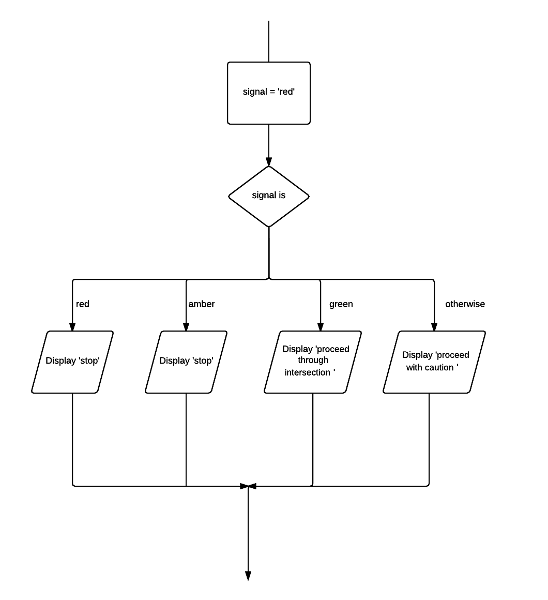

04 Multi-way selection
Multi-way selection allows for any number of possible choices, or cases. The path taken is determined by the evaluation of the expression. Multi-way selection is often referred to as a case structure.
Problem
Write a set of instructions that describes how to respond to all possible signals at a set of traffic control lights.
Pseudocode
signal = 'red' CASEWHERE signal is red : Display "stop" amber : Display "stop" green : Display "proceed through intersection" OTHERWISE : Display "proceed with caution" ENDCASE
Javascript
var signal = 'red';
switch (signal) {
case 'red':
console.log("stop");
break;
case 'amber':
console.log("stop");
break;
case 'green':
console.log("proceed through intersection");
break;
default:
console.log("proceed with caution");
}
Flowchart
Open this document in Chrome and open the developer tools Windows: F12 or Ctrl-shift+I, Mac: Cmd + Opt + I.
Click run button.
Observe the console output.
Your task
Write a set of instructions that translates a dice integer into the corresponding word.
Modify program.js: set a variable dice to an integer e.g. 1 and then use a multiway selection to display the word e.g. "one". If the integer is not between 1 and 6 display "invalid dice value".